Mo 2026-06-15
Zugseil
Long
1:45h @203W
2026-06-15 bis 2026-06-21
1:45h @203W
35min @135bpm
35min @203W
Deutsche Meisterschaft Rothsee Triathlon
W24 war trainingslogisch eine solide Aufbauwoche mit gutem Gesamtbild, aber nicht mehr nur eine neutrale Fortsetzung des Wiedereinstiegs. Der Wochencharakter war eine Mischung aus stabiler Radbasis, zwei Schwimmreizen und zwei Laufreizen, wobei die entscheidende Beobachtung nicht die reine Vollständigkeit, sondern die Art der Belastungsverarbeitung ist. Geplant war eine kontrollierte Woche mit eher entschärften Intensitäten und vorsichtigem Long Run; absolviert wurde die Struktur grundsätzlich passend, aber inhaltlich an mehreren Stellen härter als vorgesehen. Der wichtigste positive Punkt ist das Long Bike vom Montag: 2:30h bei 210W mit nur 2.9% HR-Drift zeigen, dass die aerobe Radbasis aktuell stabiler ist als noch direkt nach dem Pause-Block zu erwarten war. Auch das Knie ist dadurch trainingslogisch weniger im Vordergrund, weil auf dem Rennrad kein neues Warnsignal sichtbar wurde. Der Laufblock ist deutlich ambivalenter: Der Basic Run am Dienstag war noch gut kontrolliert, aber das Tempo-Workout am Freitag lag mit den schnellen Abschnitten faktisch näher an einem deutlich schärferen Reiz als an einer reinen Tempo-Einheit. Noch wichtiger ist der Long Run am Samstag, weil er mit 4:20/km GAP, 152bpm und 9.4% HR-Drift klar zeigt, dass die Einheit metabolisch und kardiovaskulär deutlich teurer war als ein ruhiger Long Run eigentlich sein sollte. Das passt sehr gut zu deiner eigenen Beobachtung, dass Long Sessions dich stärker stressen als Intervalle: Das ist nicht ungewöhnlich, weil Long Sessions weniger lokal „hart“ wirken, aber mehr Gesamtstress über Dauer, Glycogenverbrauch, thermische Last und orthopädische Zeit unter Belastung erzeugen.
Der Schwimmkontext ist aktuell der Bereich mit der größten Diskrepanz zwischen Soll und Ist. Sowohl der Aerobic Long Swim als auch der Threshold Swim wurden sauber als Struktur durchgeführt, aber die real geschwommenen Paces lagen klar unter den daraus abgeleiteten Zielvorgaben. Das spricht nicht automatisch gegen die CSS als Testwert, aber es spricht dafür, dass die aktuellen Trainingsvorgaben im Alltagskontext noch etwas zu ambitioniert sind oder zumindest nicht robust wiederholbar umgesetzt werden. Die Health-Daten haben die Woche insgesamt gut gestützt: HRV blieb zum Wochenende wieder im Korridor, der Ruhepuls war niedrig und der Schlaf war durchweg gut bis sehr gut. Gleichzeitig zeigt der Load-Verlauf mit ATL 63, CTL 50, TSB -13 und ACR 1.257 am 2026-06-14, dass du noch belastet bist, aber nicht mehr in der akuten Überlast-Spitze der Vorwoche steckst. Für Rothsee am 2026-06-21 ist das grundsätzlich eine gute Ausgangslage, weil die Radform stabil wirkt und die Laufschärfe vorhanden ist, aber die Woche zeigt auch, dass du für die Wettkampfwoche eher Frische als weitere Härte brauchst. Für das langfristige Hauptrennen 2027 ist W24 ebenfalls positiv, weil sie die Radbasis bestätigt, aber sie mahnt gleichzeitig, Long Sessions genauer über Pacing und Fueling zu kontrollieren, statt ihre Belastung nur nach Gefühl mit Intervallen zu vergleichen. Die konkrete Konsequenz für W25 ist deshalb eine klare Race-Woche: Volumen runter, spezifische Reize kurz halten, Laufstress nicht künstlich erhöhen und Schwimmen eher zur Aktivierung und Rhythmik nutzen als als erneuten harten Leistungsnachweis. Ein praktischer Nebeneffekt für die nächste Zeit ist außerdem, dass du die Swim-Zielpaces vorerst pragmatischer lesen solltest: lieber ein wiederholbar sauberes Set schwimmen als formal an einer Vorgabe hängen, die im normalen Training aktuell noch nicht stabil erreichbar ist.
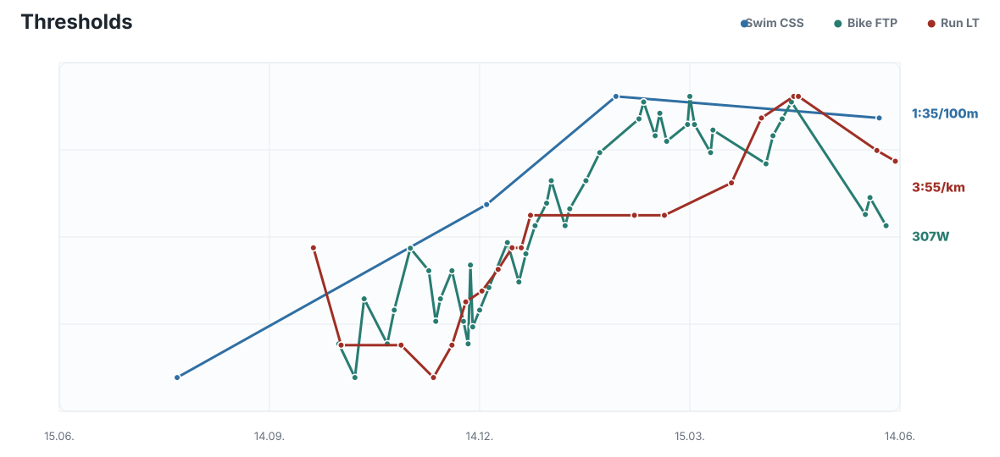
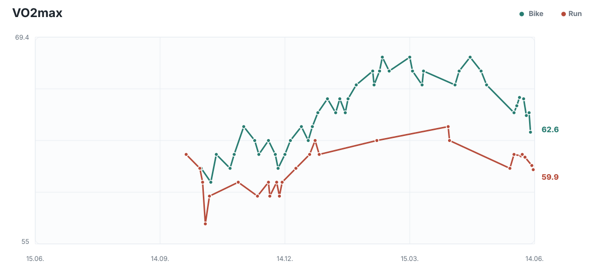
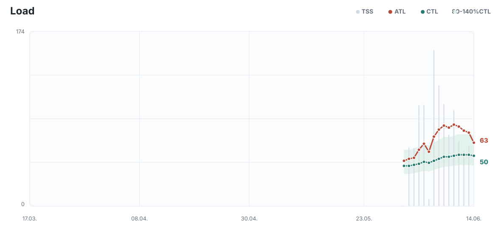
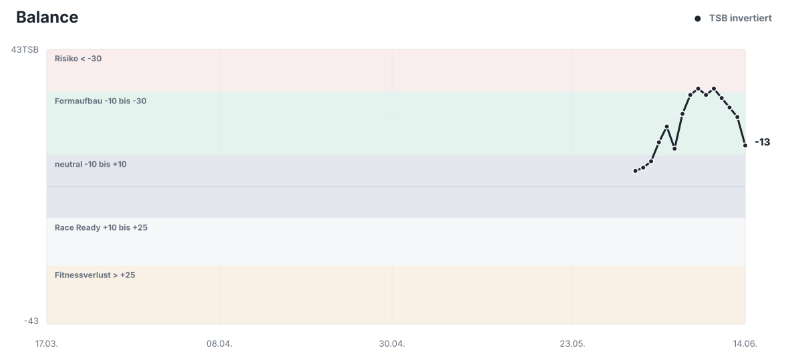
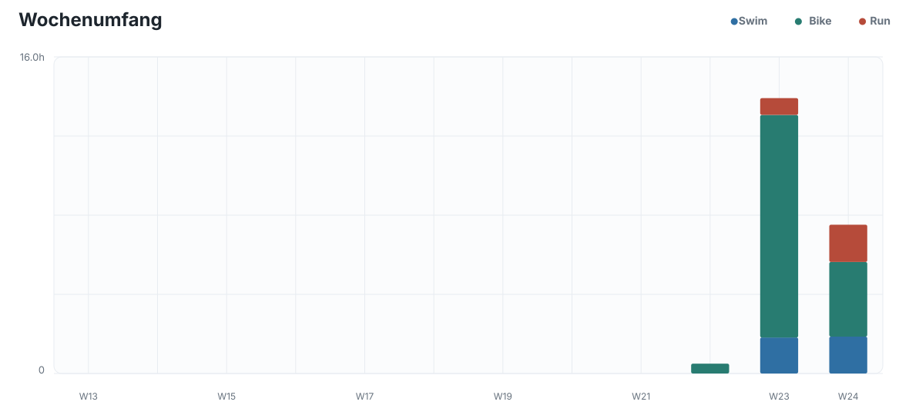
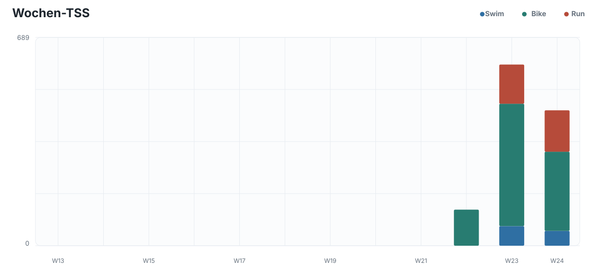
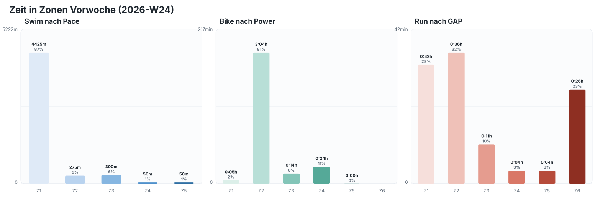
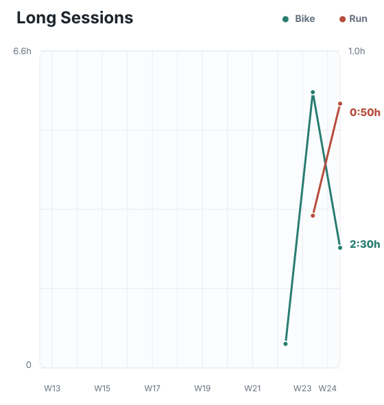
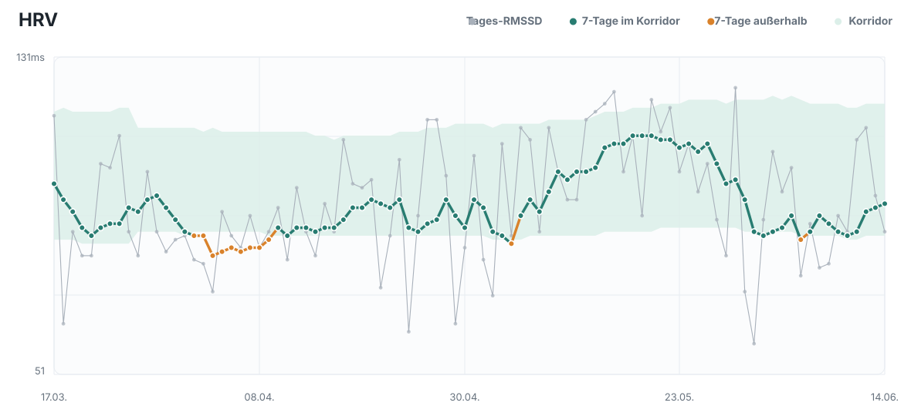
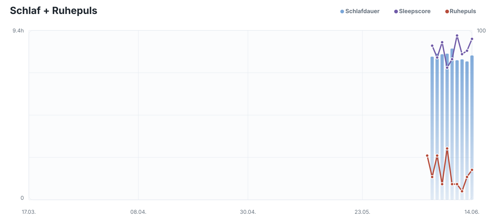
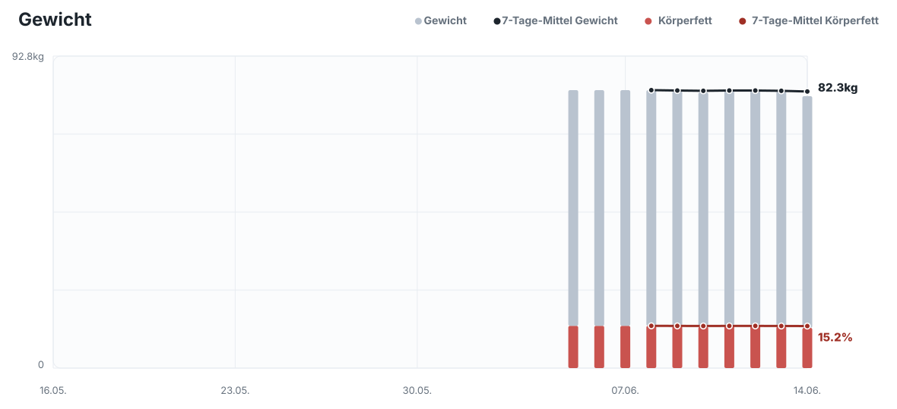
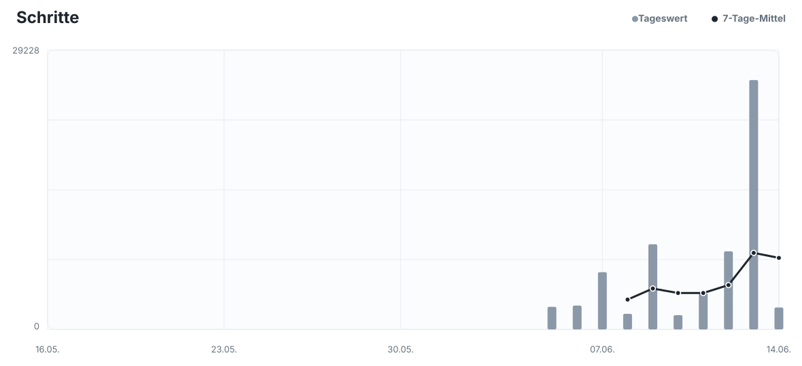